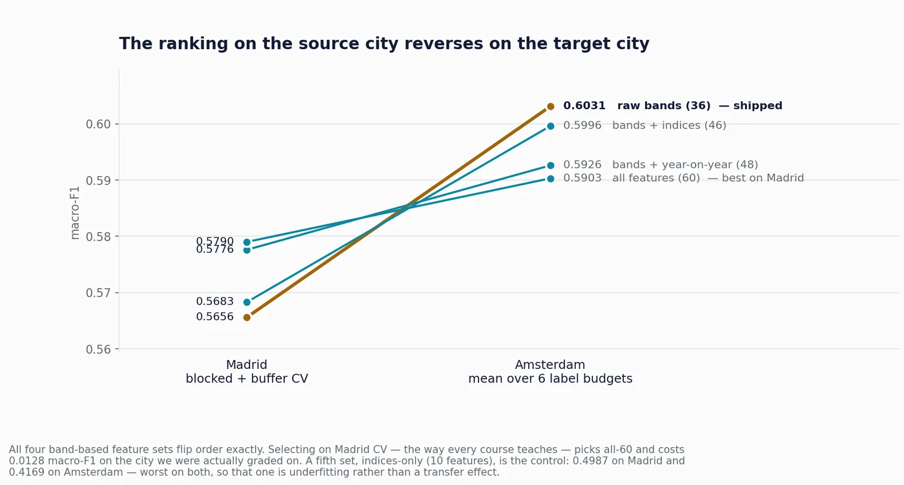

click to enlargeBuilding Age Classification from Satellite Imagery
GHANA DATA SCIENCE REGIONAL HACKATHON 2026 · KNUST · TEAM OF FOURFour days at KNUST with Kelly Nyarko, Hughes Tsikata and Antwi Yaa. The task: work out roughly when a building was put up, using nothing but 40 years of satellite readings of the ground it stands on. Train on Madrid, then make it work in Amsterdam with as few as five labelled examples per era.
The chart is the finding. We tested five sets of input features; on Madrid they rank one way and on Amsterdam in exactly the opposite order. Choosing a model the way every course teaches (best home score wins) picks the wrong one. We also caught the scoring we’d been handed inflating every result by 0.047. A satellite pixel is smaller than a building, so the standard split was putting half a roof in training and half in the test set.
We didn’t place. Two write-ups go through it properly: the leak we found in our own evaluation, and what transfer learning actually costs.

{kind=link}
{kind=link}